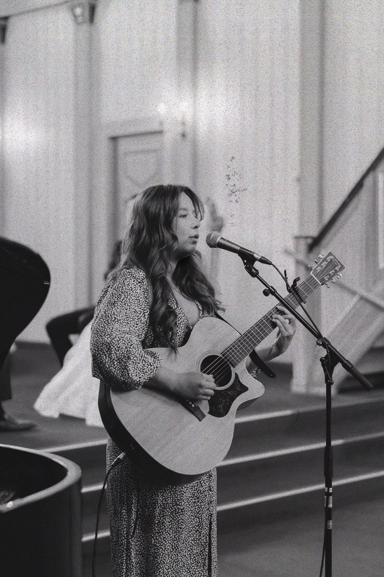

🤎 Om meg og hva jeg tilbyr av sangoppdrag
Heisann! Jeg heter Susanne Pedersen, og jeg synger og akkompagnerer meg selv under vielser, bryllup, begravelser, bursdagsfeiringer og andre seremonier.
Jeg tilbyr stemningfull musikk tilpasset anledningen og deres ønsker.
Jeg har erfaring fra mange tidligere sangoppdrag, og har spilt i både bryllup, vielser, bursdagsfeiringer, begravelser og dåp. Oversikt av repertoaret mitt finner du lenger nede på siden, og jeg tar også imot spesifikke sangønsker.
Musikk er en stor del av livet mitt og jeg har drevet aktivt med dette siden 2009. Jeg har bakgrunn fra kulturskolen med undervisning i sang, gitar og piano, samt erfaring fra kor og band. I tillegg har jeg gått musikklinjen og jobber med egenprodusert musikk.
🎹 Praktisk info for sangoppdrag
Lokasjon: Bergen og omegn
Instrument: Jeg spiller gjerne piano eller gitar til sangene. Piano må være tilgjengelig på lokasjon.
Pris: Avtales på forespørsel
🎤 Innspillinger av meg
Her er noen eksempler på sanger jeg synger.
🎶 Mitt sangrepertoar
Bryllup / Vielser
- Make You Feel My Love - Adele (cover)
- A Thousand Years - Christina Perri
- When We Were Young - Adele
- The Story - Brandi Carlile
- Turning Page - Sleeping at Last
- Exist for Love - Aurora
- Magic - Coldplay
- Lover - Taylor Swift
- The Only Exception - Paramore
Dåp
- Vi lovar - Eva Weel Skram
Begravelse
- Gabriellas Sång - Fra Så Som i Himmelen
Jeg tar også imot andre sangønsker etter avtale!

✉️ Kontakt meg
Send meg gjerne en uforpliktende forespørsel!
📧 E-post: susannepedersen1999@gmail.com
📷 Instagram: @mssusannepe